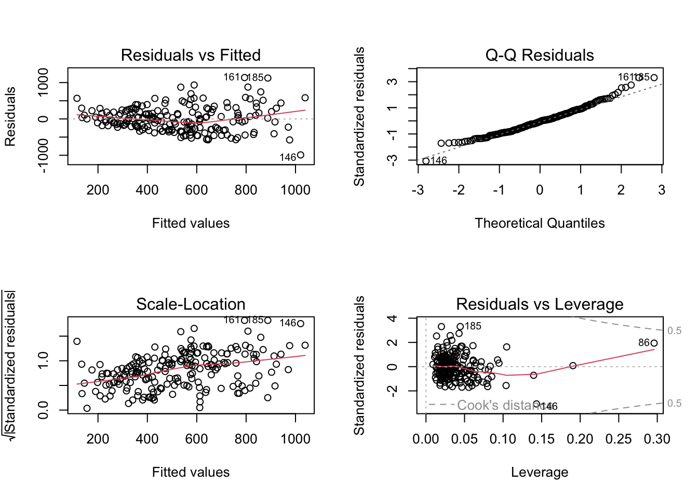

import pandas as pd# building maintainence violation data after 2017building_violations = pd.read_csv("building_violation_after_2017.csv")
<string>:3: DtypeWarning: Columns (10,12) have mixed types. Specify dtype option on import or set low_memory=False.
# those that are impairing to health and safetybuilding_violations_impairing = pd.read_csv("building_violation_after_2017_impairing.csv")
<string>:2: DtypeWarning: Columns (12) have mixed types. Specify dtype option on import or set low_memory=False.
# group by census tract and count the number of violationsviolation_count = building_violations.groupby("CensusTract").size().reset_index(name="count")violation_impairing_count = building_violations_impairing.groupby("CensusTract").size().reset_index(name="count")
library(tidyverse)
── Attaching core tidyverse packages ──────────────────────── tidyverse 2.0.0 ──
✔ dplyr 1.1.4 ✔ readr 2.1.5
✔ forcats 1.0.0 ✔ stringr 1.5.1
✔ ggplot2 3.4.4 ✔ tibble 3.2.1
✔ lubridate 1.9.3 ✔ tidyr 1.3.1
✔ purrr 1.0.2
── Conflicts ────────────────────────────────────────── tidyverse_conflicts() ──
✖ dplyr::filter() masks stats::filter()
✖ dplyr::lag() masks stats::lag()
ℹ Use the conflicted package (<http://conflicted.r-lib.org/>) to force all conflicts to become errors
library(reticulate)# Join the dataframes on the "CensusTract" columnjoined_pop <-merge(py$violation_count, py$pop, by ="CensusTract")joined_pop_impairing <-merge(py$violation_impairing_count, py$pop, by ="CensusTract")# Create a linear modelmod <-lm(count ~ med_inc + black_perc + white_perc + pov_perc + high_school_perc + bach_perc + occupancy_perc, data = joined_pop)mod_impairing <-lm(count ~ med_inc + black_perc + white_perc + pov_perc + high_school_perc + bach_perc + occupancy_perc, data = joined_pop_impairing)# Plot model for violations against multivariatepar(mfrow=c(2,2))# plot(mod)# plot model for impairing violations against multivariateplot(mod_impairing)

# summary(mod)summary(mod_impairing)
Call:
lm(formula = count ~ med_inc + black_perc + white_perc + pov_perc +
high_school_perc + bach_perc + occupancy_perc, data = joined_pop_impairing)
Residuals:
Min 1Q Median 3Q Max
-989.71 -254.08 -17.23 194.47 1138.38
Coefficients:
Estimate Std. Error t value Pr(>|t|)
(Intercept) 1.647e+03 2.054e+02 8.019 1e-13 ***
med_inc -2.827e-03 7.445e-04 -3.798 0.000195 ***
black_perc -4.069e+02 1.946e+02 -2.091 0.037812 *
white_perc -5.743e+02 2.274e+02 -2.525 0.012364 *
pov_perc -1.139e+03 3.665e+02 -3.107 0.002176 **
high_school_perc -2.669e+01 8.111e+02 -0.033 0.973782
bach_perc 7.695e+01 4.533e+02 0.170 0.865363
occupancy_perc -6.334e+02 3.686e+02 -1.719 0.087301 .
---
Signif. codes: 0 '***' 0.001 '**' 0.01 '*' 0.05 '.' 0.1 ' ' 1
Residual standard error: 347.7 on 193 degrees of freedom
(7 observations deleted due to missingness)
Multiple R-squared: 0.2679, Adjusted R-squared: 0.2413
F-statistic: 10.09 on 7 and 193 DF, p-value: 9.805e-11